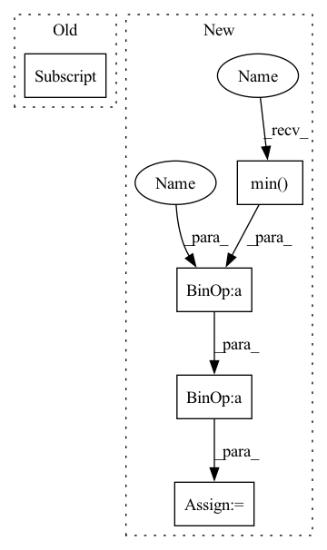

Pattern ID :13069
Before Change
// target = target.clone()
print(target.shape, prediction.shape)
mask = target > 0
target[mask] = (target[mask] - target[mask] .min()) / (target[mask].max() - target[mask].min()) * 9 + 1
//target[mask] = 10. / target[mask]
target[~mask] = 0.
After Change
//mask2 = prediction > 0
// print(mask2.type(torch.float32).mean())
prediction = (prediction - prediction .min() ) / (prediction.max() - prediction.min() + 1e-8)
//prediction[mask2] = 10. / prediction[mask2]
//prediction[~mask2] = 0.
In pattern: SUPERPATTERN
Frequency: 4
Non-data size: 5
Instances Fragment ID: 44069024
Project Name: antocad/focusondepth
Commit Name: 6c33c5957c996f4015e46dd90048624e1b019574
Time: 2021-12-30
Author: antoine.cadiou@icloud.com
File Name: FOD/Loss.py
M Class Name: ScaleAndShiftInvariantLoss
N Class Name: ScaleAndShiftInvariantLoss
M Method Name: forward(3)
N Method Name: forward(4)
M Parent Class: nn.Module
N Parent Class: nn.Module
M File Name: FOD/Loss.py
N File Name: FOD/Loss.py
M Start Line: 125
M End Line: 148
N Start Line: 136
N End Line: 136
Before Change
import pdb
def transform_output(x):
x[x>1] = 1
x = np.maximum(0,np.minimum(255*x.cpu().squeeze(), 255))
if len(x.shape) == 3:After Change
import pdb
def transform_output(x):
x = x - x.min()
x = x / x.max()
x = np.maximum(0,np.minimum(255*x.cpu().squeeze(), 255))
if len(x.shape) == 3: Fragment ID: 44068976
Project Name: aangelopoulos/im2im-uq
Commit Name: cb9dabd551e50714591983085e5338653093e3e7
Time: 2021-06-27
Author: angelopoulos@fiona.abc.berkeley.edu
File Name: core/scripts/eval.py
M Class Name: AnonimousClass
N Class Name: AnonimousClass
M Method Name: transform_output(1)
N Method Name: transform_output(1)
M Parent Class:
N Parent Class:
M File Name: core/scripts/eval.py
N File Name: core/scripts/eval.py
M Start Line: 15
M End Line: 15
N Start Line: 15
N End Line: 16
Before Change
// print(mask2.type(torch.float32).mean())
//prediction[mask2] = (prediction[mask2] - prediction[mask2].min()) / (prediction[mask2].max() - prediction[mask2].min()) * 9 + 1
//prediction[mask2] = 10. / prediction[mask2]
prediction[~mask2] = 0.
if printable:
print("******************************************************")After Change
//mask2 = prediction > 0
// print(mask2.type(torch.float32).mean())
prediction = (prediction - prediction.min() ) / (prediction.max() - prediction.min() + 1e-8)
//prediction[mask2] = 10. / prediction[mask2]
//prediction[~mask2] = 0.
Fragment ID: 44069026
Project Name: antocad/focusondepth
Commit Name: 6c33c5957c996f4015e46dd90048624e1b019574
Time: 2021-12-30
Author: antoine.cadiou@icloud.com
File Name: FOD/Loss.py
M Class Name: ScaleAndShiftInvariantLoss
N Class Name: ScaleAndShiftInvariantLoss
M Method Name: forward(3)
N Method Name: forward(4)
M Parent Class: nn.Module
N Parent Class: nn.Module
M File Name: FOD/Loss.py
N File Name: FOD/Loss.py
M Start Line: 125
M End Line: 148
N Start Line: 136
N End Line: 136
Before Change
// reindex adata1 and adata2 by matching then calculate the pairwise euclidean distance
if abs(adata1.obsm[spatial_key].max()) > 1 or abs(adata1.obsm[spatial_key].min()) > 1:
adata1.obsm["scale_spatial"] = adata1.obsm[spatial_key]/adata1.obsm[spatial_key].max()
if abs(adata2.obsm[spatial_key] .max()) > 1 or abs(adata2.obsm[spatial_key].min()) > 1:
adata2.obsm["scale_spatial"] = adata2.obsm[spatial_key]/adata2.obsm[spatial_key].max()
spatial_key = "scale_spatial"
coord1 = adata1.obsm[spatial_key][matching[1,:]]After Change
// reindex adata1 and adata2 by matching then calculate the pairwise euclidean distance
for adata in [adata1, adata2]:
coord = adata.obsm[spatial_key]
if abs(coord.ptp()) > 1 or abs(coord.max()) > 1:
adata.obsm["scale_spatial"] = (coord - coord.min( 0) )/ coord.ptp(0)
else:
adata.obsm["scale_spatial"] = coord
coord1 = adata1.obsm["scale_spatial"][matching[1,:]] Fragment ID: 44069029
Project Name: gao-lab/slat
Commit Name: 7cdf361c26cbdb2ff6bcb4a29245fc7d6f06001c
Time: 2023-04-17
Author: xiachenrui@mail.cbi.pku.edu.cn
File Name: scSLAT/metrics.py
M Class Name: AnonimousClass
N Class Name: AnonimousClass
M Method Name: euclidean_dis(4)
N Method Name: euclidean_dis(4)
M Parent Class:
N Parent Class:
M File Name: scSLAT/metrics.py
N File Name: scSLAT/metrics.py
M Start Line: 218
M End Line: 224
N Start Line: 218
N End Line: 225
Before Change
columns=scyan.adata.var_names,
index=scyan.marker_pop_matrix.index,
)
df_probs["Mean"] = df_probs.mean(axis=1)
sns.heatmap(df_probs, cmap="magma")
plt.title("Log probabilities per marker for each population")
After Change
df_probs = df_probs.reindex(
df_probs.mean().sort_values(ascending=False).index, axis=1
)
means = df_probs.mean(axis=1)
means = means / means.min() * df_probs.values.min()
df_probs.insert(0, prob_name, means)
df_probs.insert(1, " ", np.nan)
df_probs.sort_values(by=prob_name, inplace=True, ascending=False) Fragment ID: 44069013
Project Name: mics-lab/scyan
Commit Name: fc7cf1717e8e08dd7a6232eabf9731e29afb9f20
Time: 2022-03-15
Author: quentin.blampey@student.ecp.fr
File Name: scyan/plot.py
M Class Name: AnonimousClass
N Class Name: AnonimousClass
M Method Name: probs_per_marker(4)
N Method Name: probs_per_marker(3)
M Parent Class:
N Parent Class:
M File Name: scyan/plot.py
N File Name: scyan/plot.py
M Start Line: 63
M End Line: 68
N Start Line: 75
N End Line: 95